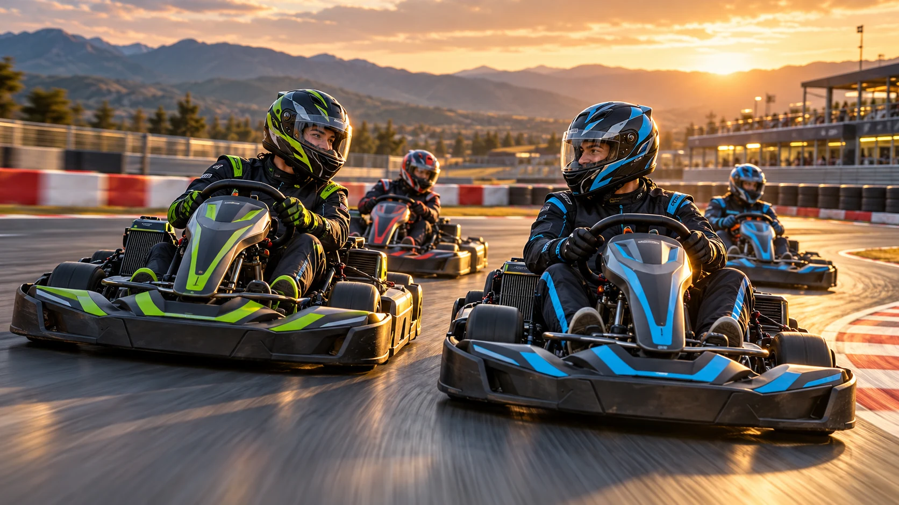
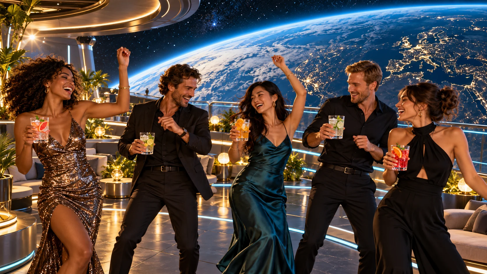
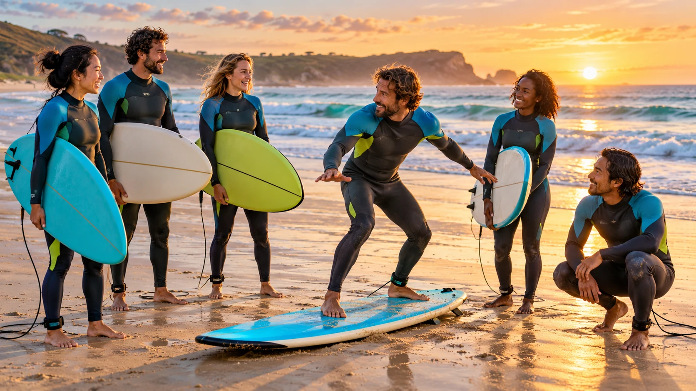
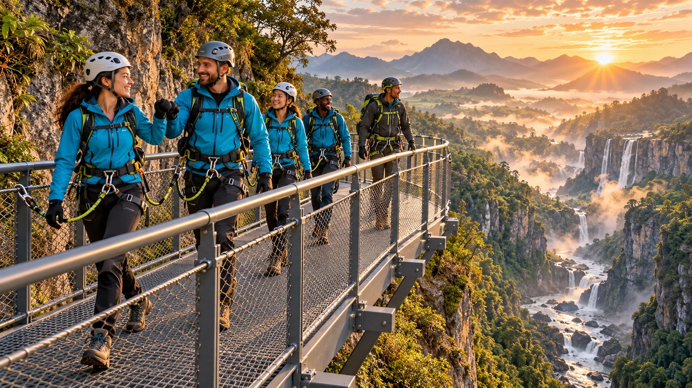
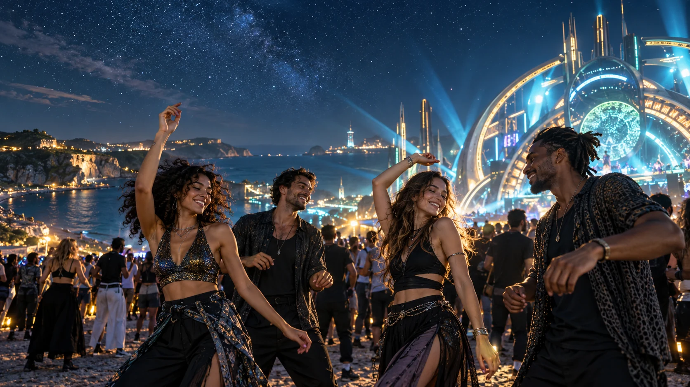
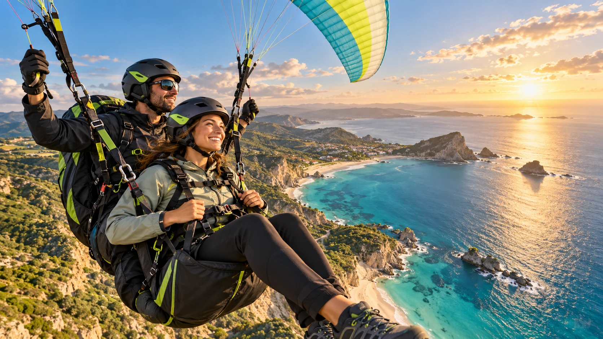
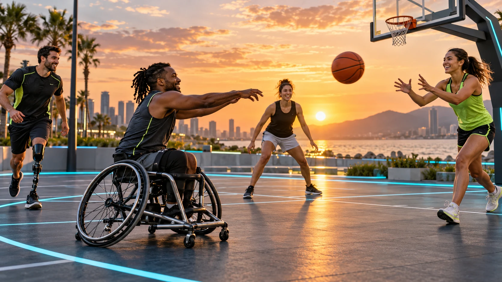
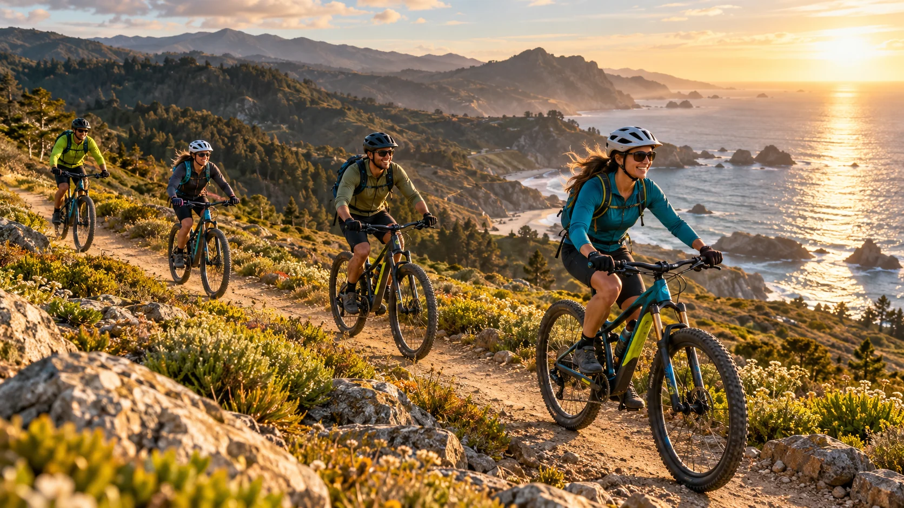
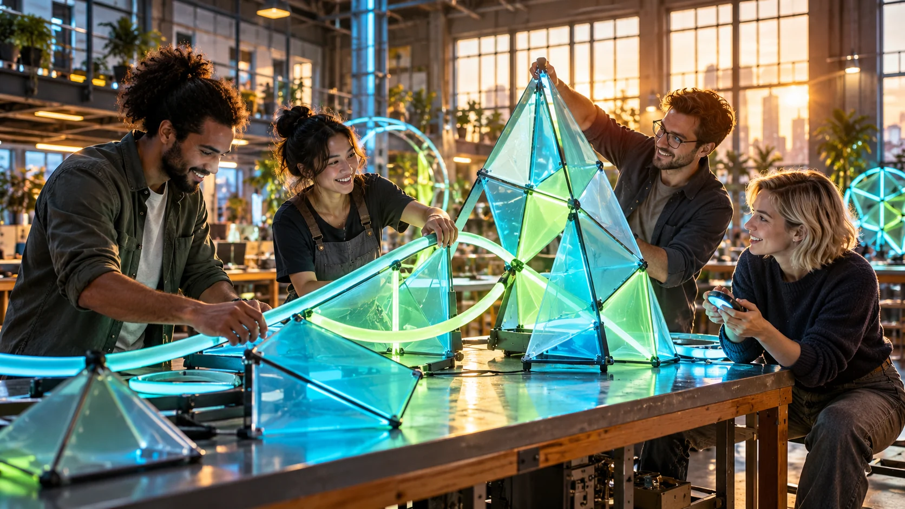
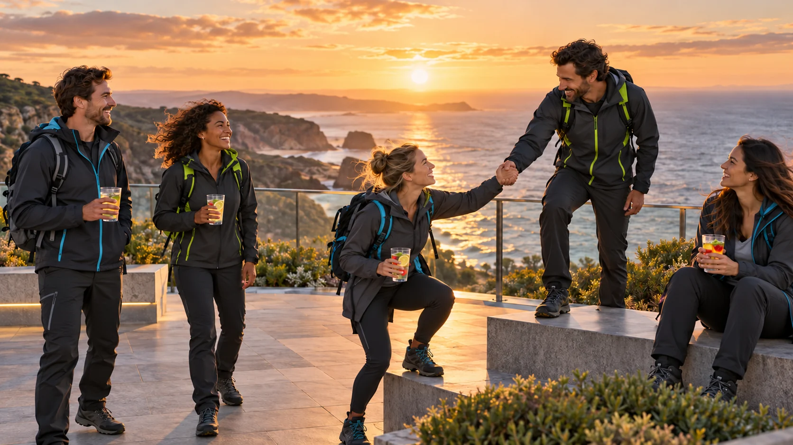

01 / EMOÇÃO + RESPEITO
Adrenalina com jogo limpo
Acelerar em circuito fechado. Celebrar juntos, com proteção e respeito a quem divide a pista.
Baixar imagemCURTIR A VIDA, DO SEU JEITO
Emoção e adrenalina com pessoas ao seu lado. Dez cenas para imaginar uma vida com presença, honra, justiça e respeito. Diversão sem álcool.
Baixar as 10 imagensArtes conceituais geradas com IA. Pessoas e cenários fictícios. As cenas de aventura representam ambientes preparados e equipamentos de proteção; não são instruções técnicas.

01 / EMOÇÃO + RESPEITO
Acelerar em circuito fechado. Celebrar juntos, com proteção e respeito a quem divide a pista.
Baixar imagem
02 / CONEXÃO + CONSCIÊNCIA
Dança, risadas e brindes sem álcool. Curtir a noite com liberdade para escolher e energia para lembrar.
Baixar imagem
03 / NATUREZA + PARCERIA
O mar, a turma e uma nova descoberta. Aprender junto, respeitar os limites e sentir cada momento.
Baixar imagem
04 / DESCOBERTA + CUIDADO
Uma aventura fica maior quando ninguém fica para trás. Equipamento, orientação e parceria fazem parte da experiência.
Baixar imagem
05 / MÚSICA + LIBERDADE
Dançar, conhecer pessoas e compartilhar o entusiasmo. Presença, consentimento e espaço para cada um.
Baixar imagem
06 / ADRENALINA + PREPARO
Mudar de perspectiva com um instrutor e equipamentos de proteção. A coragem também está em respeitar o próprio limite.
Baixar imagem
07 / INCLUSÃO + JUSTIÇA
Uma boa partida tem espaço para diferentes corpos e habilidades. A energia está na cooperação e no jogo limpo.
Baixar imagem
08 / MOVIMENTO + AMIZADE
Pedalar com companhia, proteção e atenção à trilha. Ir mais longe pode começar respeitando o ritmo do grupo.
Baixar imagem
09 / CRIATIVIDADE + COLABORAÇÃO
Amigos, ideias e mãos à obra. A emoção de construir juntos e transformar imaginação em uma experiência compartilhada.
Baixar imagem
10 / PRESENÇA + SOLIDARIEDADE
Terminar uma aventura com uma boa conversa e uma mão estendida. Honra é também cuidar de quem está ao lado.
Baixar imagem